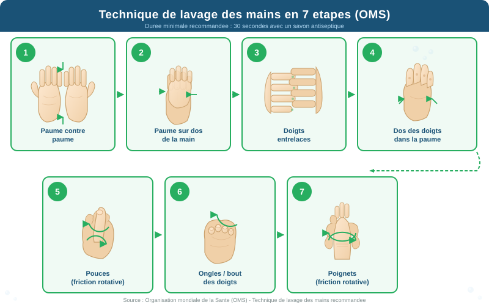
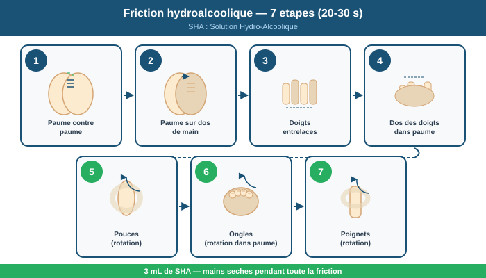

Règles de protection du travailleur, gestion des accidents d'exposition au sang (AES), vaccination
Durée indicative : 2h30
Objectifs pédagogiques
Connaître les équipements de protection individuelle (EPI)
Maîtriser la technique de pose des gants stériles
Savoir réagir en cas d'accident d'exposition au sang (AES)
Connaître les obligations vaccinales
6.1 Équipements de protection individuelle (EPI)
6.1.1 Les gants
Le port de gants est obligatoire pour tout acte de tatouage ou de perçage. Ils constituent la première barrière contre la contamination croisée.
Type : gants à usage unique, en nitrile (recommandé) ou en latex (vérifier l'absence d'allergie). Le vinyle est déconseillé (porosité, faible résistance)
Taille : ajustée à la main du praticien (ni trop large, ni trop serré)
Changement : changer de gants entre chaque client, après tout contact avec une surface non stérile, en cas de perforation, et toutes les 45 à 60 minutes maximum
Sans poudre : les gants poudrés sont interdits (risque d'allergie au latex, contamination particulaire)
6.1.2 Technique de pose des gants stériles
Pour les actes nécessitant des gants stériles (perçage, certains tatouages), la technique de pose est la suivante :
Protocole de pose des gants stériles
Préparation : lavage antiseptique des mains (ou friction hydroalcoolique chirurgicale). Séchage complet. Vérifier l'intégrité de l'emballage et la date de péremption
Ouverture de l'emballage extérieur : ouvrir le sachet extérieur en le tirant par les côtés, sans toucher l'emballage intérieur. Déposer l'emballage intérieur sur une surface propre
Ouverture de l'emballage intérieur : saisir les rabats de l'emballage intérieur par les coins (zone non stérile) et l'ouvrir à plat. Les gants apparaissent pliés, poignets repliés vers l'extérieur
Premier gant : avec la main dominante, saisir le gant opposé par le revers du poignet (face interne, partie repliée). Enfiler le gant sur la main non dominante sans toucher la face externe
Second gant : glisser les doigts gantés de la main non dominante sous le revers du second gant (face externe stérile). Enfiler le second gant sur la main dominante
Ajustement : ajuster les gants doigt par doigt en ne touchant que les faces externes stériles. Dérouler les poignets en évitant de toucher la peau ou les manches
Vérification : vérifier l'absence de perforation (visuelle). Les mains gantées ne doivent plus toucher aucune surface non stérile
Vidéo : enfilage des gants stériles
Source : Université de Caen — NorSims
6.1.3 Autres EPI
Masque chirurgical : recommandé lors des piercings buccaux/nasaux et en cas de symptômes respiratoires. Protège le client des projections du praticien
Lunettes de protection : recommandées en cas de risque de projection (sang, liquides corporels)
Tablier/blouse : tenue professionnelle lavable à 60°C minimum, changée quotidiennement
Sur-chaussures : si nécessaire selon l'organisation du local
6.1.4 Précautions standard — SF2H
La Société Française d'Hygiène Hospitalière (SF2H) définit les précautions standard comme le socle de la prévention du risque infectieux. Elles s'appliquent à tout professionnel exposé au risque de contact avec du sang ou des liquides biologiques, y compris les professionnels du tatouage et du perçage corporel.
Pourquoi les précautions standard sont essentielles
Les précautions standard constituent le socle de la prévention du risque infectieux. Elles s'appliquent à tout acte, pour tout client, quel que soit son statut infectieux connu ou supposé. Elles partent du principe que tout sang et tout liquide biologique sont potentiellement contaminants.
En tatouage et perçage, chaque acte implique un contact avec du sang — les précautions standard ne sont donc pas optionnelles mais obligatoires à chaque instant.
Les 7 précautions standard (SF2H) adaptées au tatouage et perçage
Hygiène des mains : lavage ou friction hydroalcoolique avant et après tout contact avec le client, avant et après le port de gants
Port d'équipements de protection individuelle (EPI) : gants à usage unique pour tout acte, masque chirurgical si risque de projection, lunettes de protection si nécessaire
Prévention des accidents d'exposition au sang (AES) : ne jamais recapuchonner les aiguilles, élimination immédiate dans le collecteur DASRI, utilisation de matériel de sécurité
Gestion des liquides biologiques : nettoyage immédiat de toute projection de sang, utilisation de produits détergents-désinfectants, protection des surfaces
Gestion du matériel souillé : pré-désinfection immédiate du matériel réutilisable, élimination du matériel à usage unique en DASRI
Entretien de l'environnement : nettoyage et désinfection des surfaces entre chaque client, protocole codifié d'entretien des locaux
Gestion des déchets : tri rigoureux (DASRI / DAOM), filière d'élimination conforme, traçabilité (bordereau BSD)
Source : Société Française d'Hygiène Hospitalière (SF2H) — Recommandations pour la prévention de la transmission croisée
6.1.5 Tableau des EPI selon les recommandations SF2H
EPI
Quand ?
Type recommandé
Source
Gants non stériles
Tout contact avec la peau lésée, le sang, les muqueuses
Nitrile, sans poudre, à usage unique
SF2H / NF EN 17169
Gants stériles
Acte de perçage, mise en place du champ stérile
Nitrile ou latex stérile, sans poudre
SF2H
Masque chirurgical
Piercing oral/nasal, symptômes respiratoires du praticien
Type II ou IIR
SF2H
Lunettes de protection
Risque de projection de sang ou liquides biologiques
Lunettes à coques latérales ou visière
SF2H
Tablier / blouse
Pendant tout acte
Tissu lavable à 60°C ou à usage unique
NF EN 17169
Source : Société Française d'Hygiène Hospitalière — Recommandations pour la prévention des infections
6.2 Accidents d'Exposition au Sang (AES)
6.2.1 Définition
Un AES est tout contact accidentel avec du sang ou un liquide biologique contaminé par du sang, survenant par :
Effraction cutanée : piqûre d'aiguille, coupure par un objet tranchant contaminé
Contact muqueux : projection de sang dans les yeux, la bouche, le nez
Contact cutané : sur peau lésée (coupure, excoriation, eczéma)
6.2.2 Conduite à tenir en cas d'AES
Protocole d'urgence AES
Immédiatement : ne pas faire saigner. Nettoyer la plaie à l'eau et au savon (5 minutes). Rincer
Désinfecter : tremper dans du Dakin ou de la Javel diluée à 2,6 % pendant 5 minutes. Ou : alcool à 70° pendant 5 minutes. En cas de projection oculaire : rincer abondamment au sérum physiologique pendant 5 minutes
Consulter en urgence : se rendre aux urgences hospitalières dans les 4 heures (idéalement dans les 2 heures) pour évaluation du risque et décision de traitement post-exposition (TPE) si nécessaire
Déclarer : déclaration d'accident du travail dans les 24 heures auprès de l'employeur (ou de la CPAM pour les indépendants)
Suivi sérologique : bilan initial (VIH, VHB, VHC) puis suivi à 6 semaines, 3 mois et 6 mois
Référence : RPAS — Recommandations pour la Prévention des AES
Le guide RPAS (Recommandations pour la Prévention des Accidents d'Exposition au Sang), publié sous l'égide du GERES (Groupe d'Étude sur le Risque d'Exposition des Soignants) et de la SF2H, détaille les mesures de prévention des AES en milieu professionnel. Ses recommandations sont directement applicables aux professionnels du tatouage et du perçage corporel.
Source : GERES / SF2H — Guide de prévention des AES
6.2.3 Prévention des AES
Ne jamais recapuchonner une aiguille usagée
Éliminer immédiatement les objets piquants/coupants dans le collecteur DASRI (conteneur à aiguilles jaune, norme NF X 30-500)
Le collecteur doit être à portée de main du praticien, jamais rempli au-delà de la ligne de remplissage maximal
Travailler dans de bonnes conditions (éclairage, ergonomie, calme)
Port systématique de gants adaptés
6.3 Vaccination
6.3.1 Vaccinations recommandées
Pour les professionnels du tatouage et du perçage, les vaccinations suivantes sont fortement recommandées :
Vaccination
Justification
Schéma
Hépatite B (VHB)
Virus très résistant, survie 7 jours sur surfaces sèches, transmission sanguine. Risque professionnel majeur
Rappels obligatoires dans le cadre du calendrier vaccinal
Rappels tous les 20 ans (adulte) selon le calendrier en vigueur
Grippe saisonnière
Prévention de la transmission aux clients et continuité d'activité
Annuelle
COVID-19
Selon les recommandations en vigueur
Selon le calendrier vaccinal
Vaccination hépatite B
La vaccination contre l'hépatite B est essentielle pour tout professionnel exposé au risque sanguin. Le virus de l'hépatite B est 50 à 100 fois plus infectieux que le VIH. Un professionnel non vacciné qui se pique avec une aiguille contaminée par le VHB a un risque de contamination de 6 à 30 % (contre 0,3 % pour le VIH). La vérification de l'immunité (dosage des anticorps anti-HBs) est recommandée.
6.3.2 Vaccination obligatoire vs recommandée
Vaccin
Statut
Justification
Hépatite B
Très fortement recommandé
VHB 50-100x plus infectieux que le VIH. Risque de contamination de 6-30% après piqûre. Pas d'obligation légale pour les non-soignants, mais indispensable en pratique.
DTP (Diphtérie, Tétanos, Polio)
Obligatoire
Obligation vaccinale pour tout adulte (rappel tous les 20 ans). Tétanos : risque lié aux plaies.
Grippe
Recommandé
Protection du professionnel et des clients immunodéprimés.
COVID-19
Recommandé
Selon recommandations en vigueur et situation épidémique.
Coqueluche
Recommandé
Rappel à 25 ans, puis tous les 20 ans (combiné DTP).
Vérification du statut vaccinal
Il est recommandé de vérifier son statut vaccinal auprès de son médecin traitant et de tenir à jour son carnet de vaccination. Le contrôle des anticorps anti-HBs (taux protecteur ≥ 10 UI/L) est conseillé après la vaccination contre l'hépatite B.
6.4 Hygiène des mains
6.4.1 Quand se laver les mains ?
En arrivant à l'établissement
Avant et après chaque acte sur un client
Avant de mettre les gants et après les avoir retirés
Après avoir touché du matériel souillé
Après être allé aux toilettes
Après s'être mouché, avoir toussé ou éternué
Avant et après avoir mangé

Figure 5 — Les 7 étapes du lavage des mains (OMS)
Image a placer : assets/illustrations/lavage-mains.svg
Figure 5 — Technique de lavage des mains en 7 etapes (Source : OMS / SF2H)
6.4.2 Technique de lavage
Lavage simple (30 secondes) : eau + savon doux. Élimine la flore transitoire. Pour les gestes courants
Lavage antiseptique (1 minute) : eau + savon antiseptique (chlorhexidine ou povidone iodée). Élimine la flore transitoire et réduit la flore résidente. Avant les actes de tatouage/perçage
Friction hydroalcoolique (30 secondes) : solution ou gel hydroalcoolique sur mains sèches et visuellement propres. Alternative au lavage pour les gestes courants. Ne remplace pas le lavage en cas de souillure visible
6.4.3 Prérequis pour l'hygiène des mains
Ongles courts, sans vernis ni faux ongles
Pas de bijoux aux mains et poignets (bagues, bracelets, montres)
Peau des mains en bon état (pas de coupures, gerçures non protégées)
Utilisation d'une crème hydratante compatible en fin de journée pour prévenir les irritations
Vidéo : lavage des mains — Technique OMS
Technique de lavage des mains en 7 étapes selon l'OMS
6.4.4 Friction à la solution hydroalcoolique (SHA)
La friction hydroalcoolique est la technique de référence pour l'hygiène des mains selon la SF2H. Elle est plus rapide (20-30 secondes), plus efficace sur la flore transitoire et mieux tolérée que le lavage au savon.
Technique de friction SHA — 7 étapes
Paume contre paume — frictionner les paumes entre elles
Paume sur dos — paume de la main droite sur le dos de la main gauche, et inversement
Doigts entrelacés — paumes face à face, doigts entrelacés
Dos des doigts — dos des doigts contre la paume opposée, doigts emboîtés
Pouces — friction par rotation du pouce droit dans la paume gauche, et inversement
Ongles — friction par rotation des doigts joints dans la paume opposée
Poignets — friction des poignets
Durée : 20 à 30 secondes avec 3 mL de SHA. Les mains doivent rester humides pendant toute la durée de la friction.

Technique de friction SHA en 7 étapes — recommandations SF2H